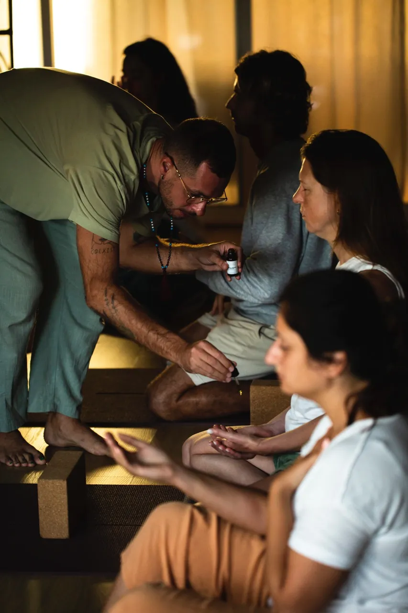

Meditation Classes
clarity, balance, inner peace

A practice grown over decades
Meditation has been part of my life since childhood. In the beginning, it served as a coping mechanism, an escape into the spiritual world.
My first formal experience came during my initial Reiki training at age fifteen, and from that point onward, meditation gradually evolved into a practice of acceptance, awareness, and inner spaciousness.
Over the past decade I have studied and practised Vipassana in both the Goenka and Mahasi traditions, along with Tibetan Buddhist pranayama and meditation at dedicated centres, deepened by a two-year journey through India and Southeast Asia. What I teach is what I practise.
Join a practice
Community Meditation
A free-flowing weekly group practice, themed around clarity, balance and inner peace. Open to everyone, wherever you are.
Every Wednesday · 19:30–20:00 Lisbon time · join via the Temple of Sun WhatsApp circle
Join the circle28 Days Meditation Challenge
Build a daily habit with 33 minutes of live guidance every morning at 7:00 Lisbon time: a new technique taught each day, practised together, closed with an angel card for the group. Recordings if you miss a morning.
Pranayama · Vipassana · Chakra Suddhi · Metta Bhavana · Yoga Nidra · beginners welcome. Runs in cohorts; next dates announced to the circle.
Ask about the next cohort“It's time to turn ON your inner light.”the challenge's guiding line
Guidance made just for you
For a personal meditation routine built around your life, including a one-week daily guidance program, see the online sessions.
Explore online sessions→